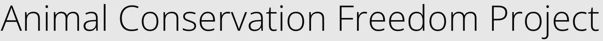

The freedom project is a year long project in the SEP10 course that I am currently taking that allows students to choose a topic of their own. Next, they begin research on the given topic, and create a list of future and current software advancements that would exist. After that last step, students will create a website using their knowledge of html and css properties aswell as using their own website tool that they learned. Lastly, students will present their websites in class and in an expo to finish up the project.
I decided to go on and choose animal conservation because it felt like a topic that not that many people around the world knew so being able to create a website to inform others and give more knowledge and understanding on the importance of animal conservation could make a big difference.
I aimed to create a website that went over current and future software and hardware advancement’s made in the topic of animal conservation.
To do this, I used a website tool called foundation framework which uses these things called CDN links that help in creating specific components such as customizable cards, notifications, menus, etc... that could overall improve the website.
One of the main challenges that I had overall was that my color contrast was a issue when working on my website.
I was working on a sources section when I noticed that the combination with my background color which was a dark redish brown color with my foreground color of a dark blue text link made my sources very difficult to see.
So... using the feedback I recieved. I aimed to change the background color to a more brighter color that way so that the foreground color(the dark blue link color) would stand out more and I was able to solve the problem.
The main takeaway that I had from working on this project overall was that I needed to be able to have clear communication during my presentation and during my presentation expo. I often noticed that during my in class presentation that I was spending a long time on different sections and sometimes my volume would go from loud to silent after a while. So, next time I should keep my communication at a constant volume while also making sure that im more quick and brief in my presentation.
I felt like my website had alot of potential to be alot more better however I came into alot of problems with my tool that I used. Responsiveness became an issue that I came across alot of the time which often forced me to make some changes as to what I would add. So possibly during the summer I may try and understand more on my tool and try and add more components to my website that could make my website more polished.
